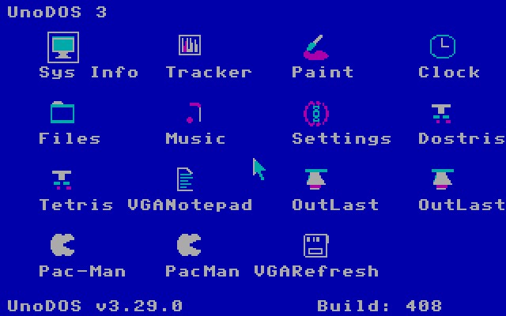
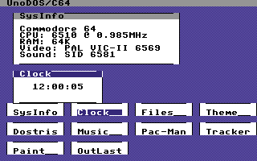
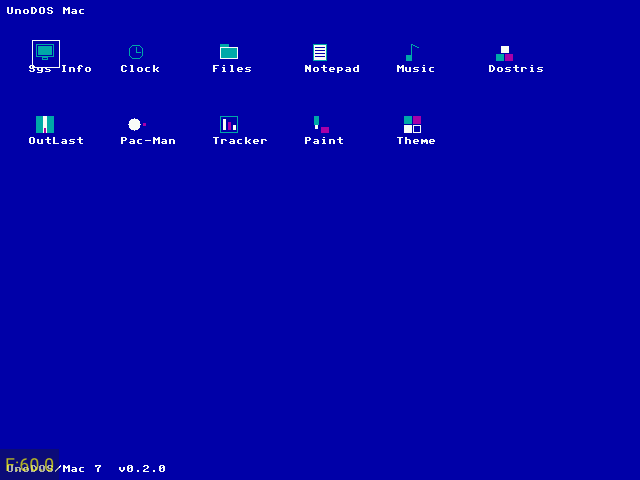
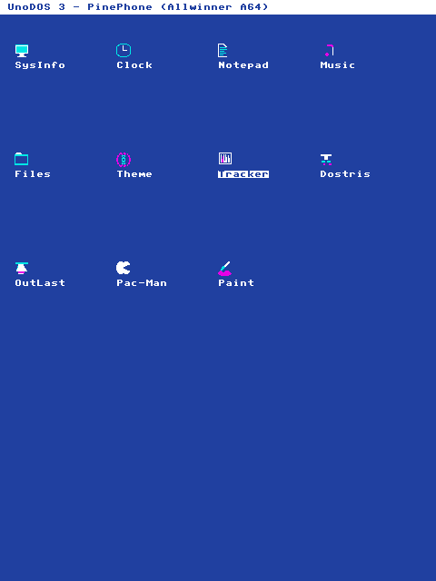
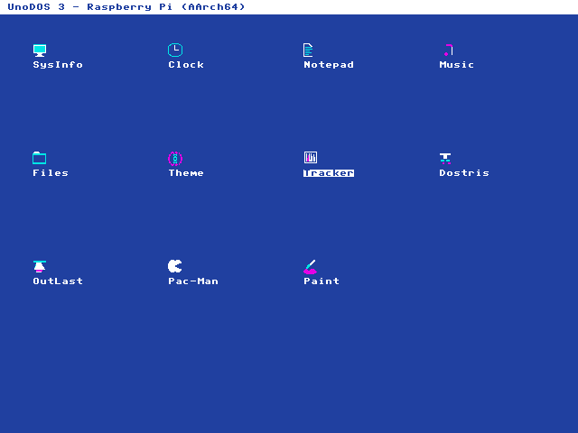
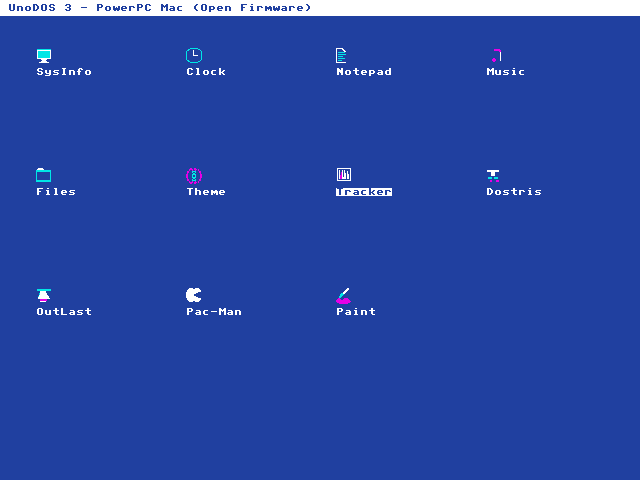
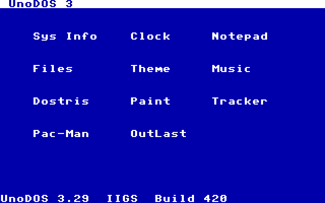
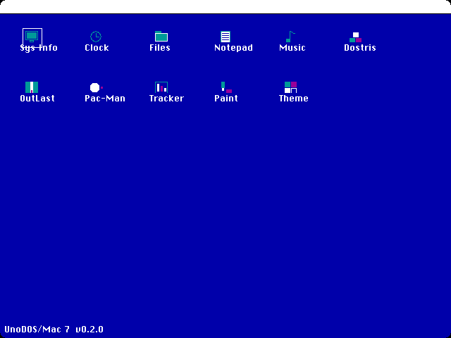

The UnoDOS family
pc64 is one of many. The same GUI-first UnoDOS runs on more than 20 kinds of hardware, from 8-bit consoles to modern ARM boards. Here is how the others differ.
One idea, many machines
The same UnoDOS desktop and apps run on machines as different as a Commodore 64 and a Raspberry Pi. On each one, UnoDOS asks the machine for a screen and for input, then runs the same way. A shared design keeps every version consistent instead of drifting apart.
How much desktop each machine gets
It depends on how much memory the machine has:
- The full desktop: more capable machines (pc64, PlayStation 2, Dreamcast, and the ARM and PowerPC boards) run the full desktop shown in this manual.
- A simpler desktop: the smallest machines (NES, Game Boy, the C64) have very little memory, so they run a simpler icon-and-button desktop instead.
A few of the machines








The full lineup
| World | Hardware | CPU | Boot / display |
|---|---|---|---|
| pc64 | Modern PC (2007+) | x86-64 | UEFI GOP (this manual) |
| Classic | IBM PC/XT | Intel 8088+ | BIOS · CGA |
| Amiga | Commodore Amiga | 68000 | native chipset |
| Mac Plus | Compact Macintosh | 68000 | native |
| PowerPC Mac | Power Macintosh | PowerPC 32-bit | Open Firmware |
| Apple II | Apple II | MOS 6502 | native |
| Apple IIGS | Apple IIGS | 65C816 | native |
| C64 | Commodore 64 | 6510 | VIC-II · SID |
| VIC-20 | Commodore VIC-20 | 6502 | VIC 6560/1 |
| NES | Nintendo NES | 6502 / 2A03 | PPU |
| SNES | Super Nintendo | 65C816 | native |
| Master System | Sega Master System | Z80 | 315-5124 VDP |
| Game Gear | Sega Game Gear | Z80 | 315-5124 VDP |
| Genesis | Sega Mega Drive | 68000 + Z80 | native |
| Game Boy / Color | Nintendo Game Boy | Sharp SM83 | native |
| Game Boy Advance | Nintendo GBA | ARM7TDMI | native |
| PC Engine | NEC TurboGrafx-16 | HuC6280 | HuC6270 VDC |
| WonderSwan | Bandai WonderSwan | NEC V30MZ | native |
| Dreamcast | Sega Dreamcast | SH-4 | native |
| PlayStation 2 | Sony PS2 | Emotion Engine | native |
| Raspberry Pi | Raspberry Pi | ARM Cortex-A (AArch64) | VideoCore mailbox FB |
| PinePhone | PinePhone | Allwinner A64 (AArch64) | DE2 display engine |
Where to read moreFull details for every machine live in the repository: github.com/hmofet/unodos.